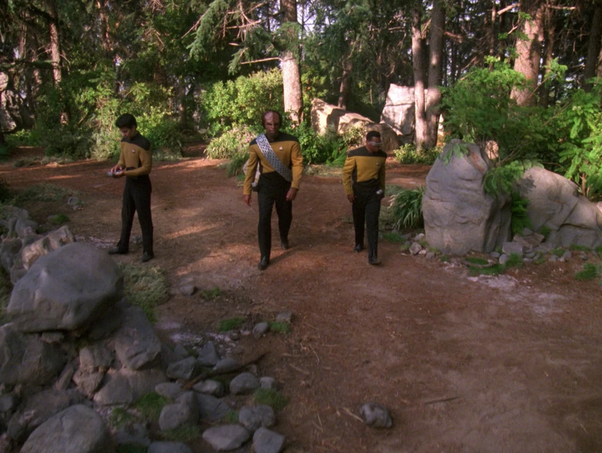
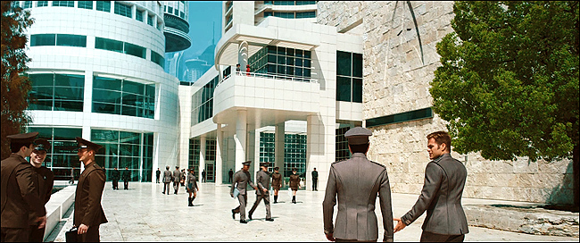

Location 01
Vulcan: Vasquez Rocks, Agua Dulce, CA
One of the most famous Star Trek locations, Vasquez Rocks appeared in The Original Series episode "Arena," where Captain Kirk battles the Gorn. The dramatic rock formations have been used repeatedly across multiple Trek series.
Find on MapLocation 02
Starfleet Headquarters: Golden Gate Bridge, San Francisco, CA
Frequently shown in establishing shots of Starfleet Headquarters, the Golden Gate Bridge represents Earth's connection to the Federation. It appears in multiple films and series, especially in the Kelvin Timeline movies.
Find on MapLocation 03
Muir Woods National Monument, California
The towering redwoods of Muir Woods were used in Star Trek Into Darkness to depict an alien planet. The massive trees and filtered light give the forest a mystical, sci-fi feel unlike anywhere else on Earth.
Find on MapLocation 04
Point Mugu State Park, Malibu, CA
Several episodes of The Original Series used the dramatic cliffs and beaches of Point Mugu as alien landscapes. It's one of the most reused outdoor filming locations from the 1960s series.
Find on Map
Location 05
Griffith Observatory, Los Angeles, CA
Featured in Star Trek: Voyager during a 20th-century Earth storyline, Griffith Observatory is one of the most recognizable scientific landmarks used in the franchise.
Find on Map
Location 06
Starfleet: The Getty Center, Los Angeles, CA
The Getty Center's sleek white architecture was used in Star Trek Into Darkness as futuristic Starfleet facilities. Its modern design makes it feel naturally sci-fi, requiring almost no set dressing to transform.
Find on Map